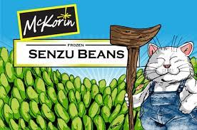

Senzu Beans

Senzu Bean Delight
The revitalizing Senzu Beans are the creation of non other than the greatest furry to
walk the planet, Korin. The highly versitile beans will help you take on the likes of
Saiyans and androids a-like. Allowing you to not succumb to injury nor fatiuge. These intense
tik-tacs not only restore you to your former glory, they help you become beach body ready with
just one Bean keeping you full for no less then TEN whole days!
- One tower reaching the heavens
- One magical talking cat(preferably one named Korin)
- One handful of magical beans from spaces unkown
- Obtain the tower, the beans, and a talking cat
- Plant said Senzu Beans
- Cherish both the cat and beans while they grow(it's said to take a long time for the latter to grow so get chatting with your furry partner)
- Once beans are ripe they are perfectly capable of being picked right off the vine and taken into battle
- Lastly, annihalate any foes whom may have caused you grievances knowing full well you have the ability to restore yourself at any given point
- Enjoy!
Ascend